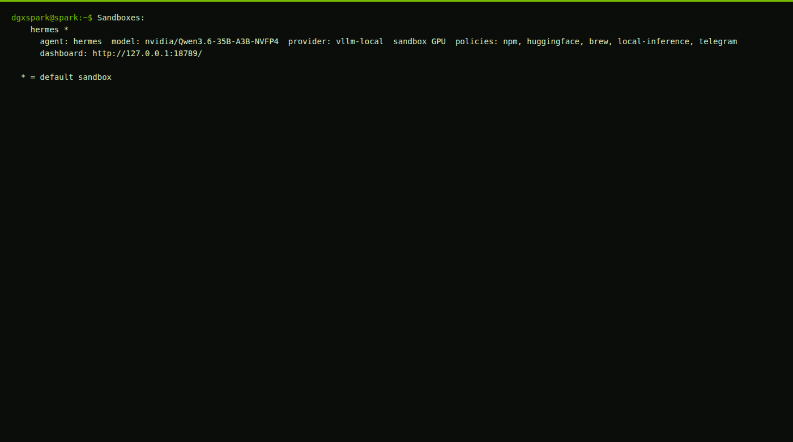
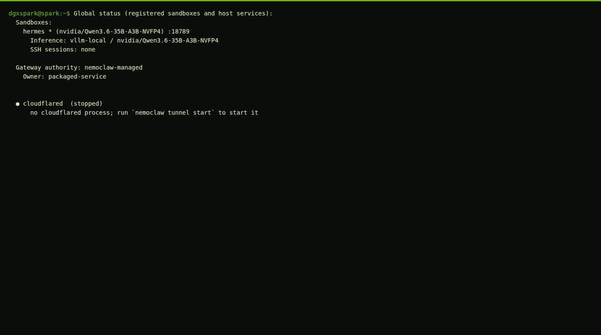
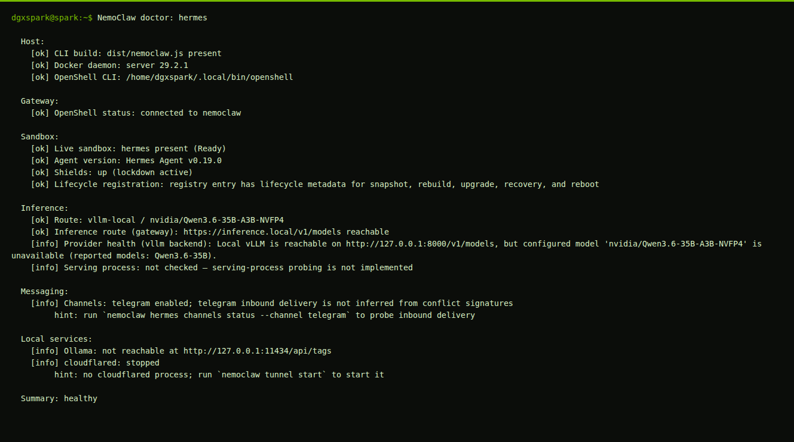
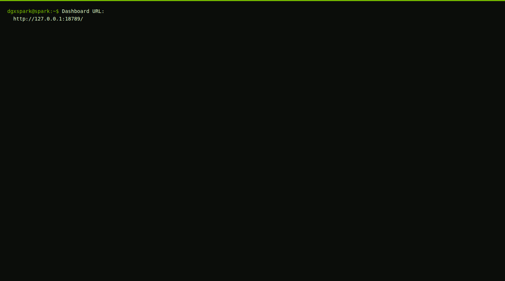
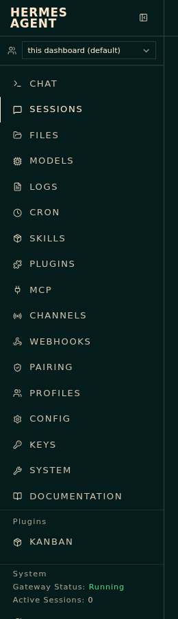
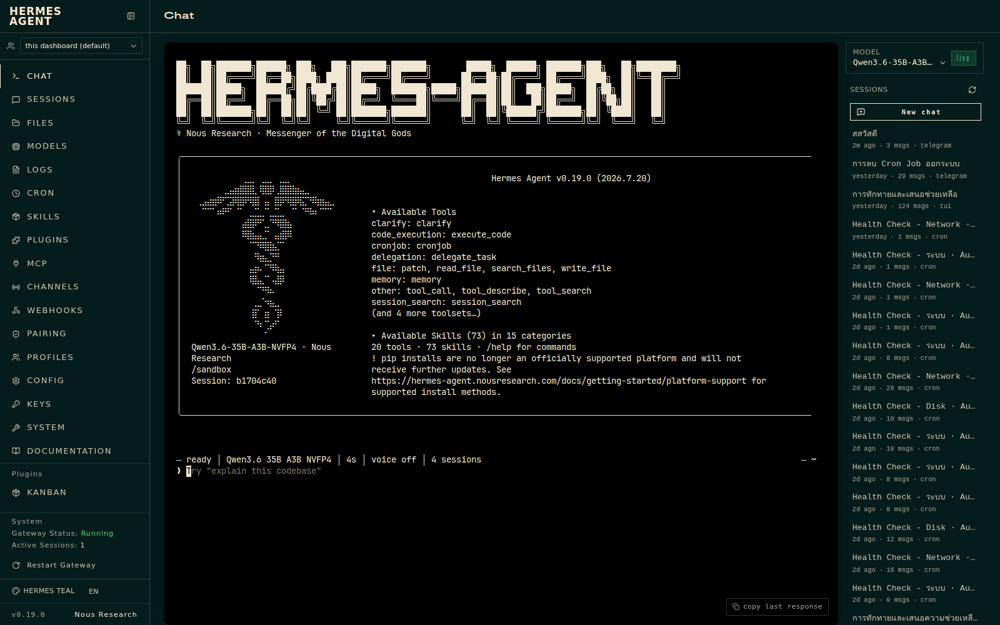

NemoClaw
ตัวจัดการ sandbox เปิด ปิด ดูสถานะ ซ่อม gateway และพิมพ์ URL แดชบอร์ด คำสั่งบนเครื่องนี้คือ nemoclaw ชื่อ sandbox คือ hermes
คนละระบบกับ Open WebUI Hermes อยู่ใน sandbox แยก ทำได้ทั้งคุย เรียกเครื่องมือ ตั้ง cron และรับงานจาก Telegram ภาพด้านล่างแคปจากแดชบอร์ดจริงบนเครื่องนี้
ตัวจัดการ sandbox เปิด ปิด ดูสถานะ ซ่อม gateway และพิมพ์ URL แดชบอร์ด คำสั่งบนเครื่องนี้คือ nemoclaw ชื่อ sandbox คือ hermes
เอเจนต์จริงที่อยู่ใน sandbox เวอร์ชันบนเครื่องนี้คือ 0.19.0 มีแดชบอร์ด Chat / Sessions / Files / Cron / Skills รันงานเองได้
nemohermes คือคำสั่งชุดเดียวกับ nemoclaw บนเครื่องนี้ ใช้ตัวไหนก็ได้ แนะนำใช้ nemoclaw ให้ตรงกับที่ระบบลงไว้


ตรวจจากคำสั่งจริง วันที่ 17 สิงหาคม 2026
hermes เป็นค่าเริ่มต้นnvidia/Qwen3.6-35B-A3B-NVFP4 ผ่าน vLLM บนโฮสต์nemoclaw list จริง มี sandbox เดียวชื่อ hermes และชี้แดชบอร์ดไปที่พอร์ต 18789กด Ctrl + Alt + T
nemoclaw status
nemoclaw list
ต้องเห็น hermes * ดาวหมายถึงเป็นค่าเริ่มต้น
nemoclaw hermes doctor
ถ้าสรุปท้ายสุดเป็น Summary: healthy แปลว่าระบบหลักปกติ


nemoclaw hermes dashboard-url
หน้าต่างนี้ฟังที่ 127.0.0.1 เท่านั้น จากมือถือในบ้านเข้าตรง ๆ ไม่ได้
มุมล่างซ้ายต้องมี Gateway Status: Running

เมนูซ้ายแต่ละอันมีหน้าที่คนละอย่าง จำไอคอนในแถบซ้ายของภาพจริงด้านล่าง

| เมนู | หน้าที่ |
|---|---|
| CHAT | คุยกับเอเจนต์ในกล่องข้อความ |
| SESSIONS | ดูห้องสนทนาทั้งหมด และช่องทางที่ต่ออยู่ |
| FILES | ไฟล์ใน sandbox |
| MODELS | โมเดลที่เอเจนต์เรียก |
| LOGS | บันทึกการทำงาน |
| CRON | งานตามเวลา เช่น health check |
| SKILLS / PLUGINS / MCP | เครื่องมือที่เอเจนต์เรียกได้ |
| CHANNELS | ช่องทางภายนอก เช่น Telegram |
| CONFIG / KEYS / SYSTEM | ค่าตั้ง รหัส และสถานะระบบ |
| DOCUMENTATION | รายการ API ของ Hermes |
| Restart Gateway | รีสตาร์ทโปรเซสเอเจนต์ใน sandbox |
ต้องเห็นชื่อโมเดลและจุดเขียว live
หน้าจอจริงมีคำใบ้เช่น explain this codebase
เอเจนต์มีเครื่องมือ เช่น อ่านไฟล์ รันโค้ด และค้นใน sandbox ไม่ใช่แค่พิมพ์ตอบ

บนเครื่องนี้มี api_server และ telegram สถานะ Connected
ห้องที่มีป้าย telegram คือคุยผ่านบอท ห้องที่เป็น cron คืองานตามเวลา
พิมพ์ในเทอร์มินัลบนเครื่อง DGX ชื่อ sandbox คือ hermes
| คำสั่ง | ทำอะไร |
|---|---|
nemoclaw status | ภาพรวมทุก sandbox |
nemoclaw list | รายการ sandbox และ URL แดชบอร์ด |
nemoclaw hermes status | สถานะ sandbox นี้ รวมเส้นโมเดล |
nemoclaw hermes doctor | ตรวจสุขภาพทีละชั้น |
nemoclaw hermes dashboard-url | พิมพ์ URL แดชบอร์ด |
nemoclaw launch hermes | ต่อเข้า sandbox แล้วสตาร์ทเอเจนต์ |
nemoclaw hermes connect | เปิดเชลล์เข้าไปใน sandbox |
nemoclaw hermes logs --tail 50 | ดูล็อกล่าสุด |
nemoclaw hermes stop | หยุดคอนเทนเนอร์ แต่เก็บงานไว้ |
nemoclaw hermes start | เปิด sandbox ที่หยุดไว้กลับมา |
nemoclaw hermes recover | ซ่อม gateway และพอร์ต forward |
nemoclaw hermes destroy ถ้ายังอยากเก็บ sandbox นี้ คำสั่งนั้นลบทั้งกรงHermes ในกรง sandbox ไม่ได้โหลดน้ำหนักโมเดลเอง มันเป็นโปรแกรมเอเจนต์ที่ส่งคำขอออกไปหา vLLM บนเครื่องโฮสต์
เส้นทางจริงมีสองชื่อของที่เดียวกัน
https://inference.local/v1/modelshttp://127.0.0.1:8000/v1/modelsดังนั้นแดชบอร์ดที่พอร์ต 18789 เปิดได้แม้โมเดลยังไม่พร้อม เพราะแดชบอร์ดเป็นแค่หน้าเว็บของเอเจนต์ พอส่งข้อความ เอเจนต์ถึงจะยิงไปที่ vLLM ถ้าตอนนั้นชื่อไม่ตรงหรือพอร์ต 8000 ว่าง จะพัง
llm-status
ต้องเห็นคอนเทนเนอร์โมเดล running และมี API model ถ้าขึ้น Model: stopped แปลว่า Hermes ไม่มีใครให้ถาม
start-qwen35
อย่าพิมพ์ qwen35-start คำสั่งนั้นเปิดคอนเทนเนอร์คนละตัวชื่อ nemoclaw-vllm อธิบายครบอยู่ที่ หมวดโมเดล · เรื่องที่เกิดจริง
ต้องเห็น nvidia/Qwen3.6-35B-A3B-NVFP4 เพราะนี่คือสตริงที่ Hermes ใส่ในทุกคำขอ ชื่อใกล้เคียงแต่ไม่ตรงตัวอักษรจะ 404

คิดเป็นสามฝ่าย คนละหน้าที่ ห้ามปน
| ฝ่าย | ทำอะไร | มองหาชื่ออะไร |
|---|---|---|
| ไฟล์บนดิสก์ | เก็บน้ำหนักโมเดลประมาณ 22 GB | โฟลเดอร์ models--nvidia--Qwen3.6-35B-A3B-NVFP4 |
| vLLM พอร์ต 8000 | โหลดไฟล์แล้วประกาศชื่อให้คนอื่นเรียก | ตอนนี้ประกาศทั้งชื่อเต็มและชื่อสั้น |
| Hermes | ยิงแชทไปที่ vLLM | ชื่อเต็ม nvidia/Qwen3.6-35B-A3B-NVFP4 เท่านั้น |
Open WebUI ถามรายการแล้วให้คนเลือก จึงใช้ชื่อสั้นได้ Hermes ไม่เลือกจากรายการ มันยิงชื่อที่ตั้งไว้ตรง ๆ
สูตรเก่าของ start-qwen35 ประกาศแค่ Qwen3.6-35B เลยเกิดภาพลวงตาว่า “แชทได้แต่เอเจนต์พัง” ทั้งที่โหลดโมเดลก้อนเดียวกัน
curl -s http://127.0.0.1:8000/v1/models | python3 -m json.tool
เจอ = Hermes เรียกได้ ไม่เจอ = ยังใช้สูตรเก่า หรือเปิดโมเดลคนละตัวอยู่
curl -s http://127.0.0.1:8000/v1/chat/completions \
-H "Content-Type: application/json" \
-d '{"model":"Qwen3.6-35B-WRONG","messages":[{"role":"user","content":"hi"}]}'ต้องได้ข้อความประมาณ The model Qwen3.6-35B-WRONG does not exist รหัส 404 นี่คือสิ่งที่ Hermes เคยได้รับเมื่อชื่อไม่ตรง
nemoclaw hermes status
บรรทัด Model ต้องเป็นชื่อเต็ม บรรทัด Inference (vllm backend) ต้องเป็น healthy
เปิด http://127.0.0.1:18789/ จากเครื่อง DGX อย่าส่งต่อในห้องที่ error 404 ค้างไว้ เพราะข้อความเก่าจะยังโชว์อยู่


อธิบายระดับไฟล์คำสั่งและตัวเลข RAM อยู่ที่ หมวดโมเดล · เรื่องที่เกิดจริง
อาการนี้เกิดเมื่อ Hermes เรียกชื่อเต็ม แต่ vLLM ประกาศแค่ชื่อสั้น หรือเปิดโมเดลคนละตัวที่ไม่มีชื่อนั้น ไฟล์โมเดลมีครบ แค่ชื่อไม่ตรง
ใช้ start-qwen35 อันเดียว คำสั่งนี้จะปิด nemoclaw-vllm ให้ถ้าค้างอยู่
start-qwen35
ต้องมี nvidia/Qwen3.6-35B-A3B-NVFP4
curl -s http://127.0.0.1:8000/v1/models
nemoclaw hermes status
Inference (vllm backend) ต้อง healthy
อย่าตัดสินจากห้องเก่าที่ error ค้างไว้
ถ้า RAM ดูสูงผิดปกติหลังเปิด Qwen 35B ให้อ่าน ทำไม RAM สูง สูตรปัจจุบันต้องกันประมาณ 35% ไม่ใช่ 82%
nemoclaw hermes statusnemoclaw hermes startnemoclaw hermes recovernemoclaw hermes logs --tail 80
ถ้าในล็อกมีคำว่า does not exist หรือ 404 ให้กลับไปตรวจชื่อโมเดลในขั้นที่ 8 ไม่ใช่ไป rebuild sandbox